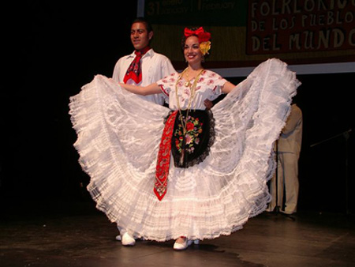
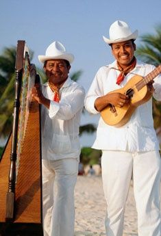

Zapateado Jarocho
El baile estereotipado de los jarochos es el "zapateado" o son jarocho, que se acostumbra en exhibiciones de todo el territorio de Veracruz. Se toca con música de jaranas, requinto, arpa, pandero y quijada de burro entre otros instrumentos y se baila sobre un escenario, zapateando. Los sones jarochos tienen un origen campesino (rural) y su temática hace referencia a este entorno (animales, costumbres, paisajes, accidentes geográficos, etc. En ellos, como en casi ninguna otra forma musical de México se conjuntan las tres raíces étnicas: la india (en la temática), la negra (en los ritmos) y la europea (en los instrumentos y armonías). Hay sones jarochos originados en los inicios y mediados del siglo XIX que se han popularizado por todo el mundo; entre los más conocidos están: La Bamba, El Colás, El Siquisirí, El Balajú, El Aguanieve, El Buscapies, El Jarabe Loco, El Zapateado, El Toro Zacamandú, El Chuchumbé, La Petenera, La Llorona, La Guacamaya, La Iguana y otros, que siguen interpretándose.

El Son Jarocho es la expresión musical propia de la cultura jarocha (Veracruz). Se practica esencialmente en la fiesta tradicional de los jarochos llamada fandango jarocho, donde se combina con la danza zapateada y la poesía cantada. Esta expresión artística también es ampliamente practicada por ejecutantes que no son de origen jarocho. La música tiene un ritmo armónico, generalmente sesquiáltero, con y contratiempos, la lírica tiene coplas cambiantes llamadas "versos" y la danza se basa en el zapateado con algún carácter similar en algunas regiones de México